愿景："让编程不再难学，让技术与生活更加有趣"
愿景："让编程不再难学，让技术与生活更加有趣"
更多课程请访问 xdclass.net
第一章 新一代Node框架-NestJS入门到项目实战课程介绍
第1集 Nestjs 框架课程介绍+适合人员+学后水平
简介：课程介绍、适合人员和学后水平
适合人群
前端工程师=>全栈｜高级
后端工程师
测开工程师
岗位需求
学后水平
- 全方位讲解 Nestjs 全家桶：脚手架|装饰器|提供者|处理器|拦截器|DTO
- 实现 RESful API+TypeORM+Mysql+实体和数据库数据同步
- 详解 Nestjs JWT 权限校验+自定义依赖注入+全局依赖注入
- 通过 React+第三方组件库Ant-Design+TailwindCSS 开发前端页面
- 前后端联调实现 Nestjs 的增删改查接口+用户注册登录功能
项目实战和代码演示
学习形式
- 视频讲解+文字笔记+代码分析+交互流程图
- 配套源码 + 笔记 + 课程软件 + 技术交流群 + 答疑
第2集 课程章集目录速览
简介：课程章集目录速览
- 课程章集目录速览
第3集 Nestjs 的基本介绍
简介：走进 Nestjs 的世界
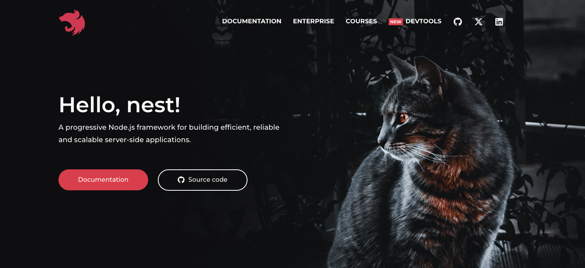
Nestjs
官网
介绍
- 是一个用于构建高效，可扩展的 Node.js 服务器端应用程序的框架。
- 它使用渐进式 JavaScript，内置并完全支持 TypeScript（但仍然允许开发人员使用纯 JavaScript 编写代码）并结合了 OOP（面向对象编程），FP（函数式编程）和 FRP（函数式响应编程）的元素
- Nestjs 框架基于 Express 和 Fastify（速度最快的 web 框架之一）
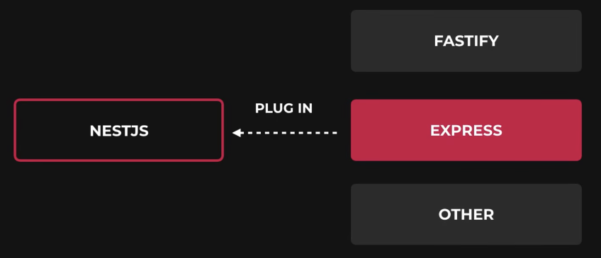
为什么要使用 Nestjs 框架？
热度
Nestjs 是所有 node 框架中发布最晚（2017年11月发布），也是在 github 中 star 增长最快的 typescript 后端框架，star 数量仅次 老牌框架 express
express
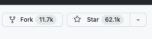
Nestjs
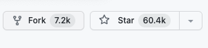
可伸缩性
NestJS 支持模块化的架构设计，使得应用程序的组织和拆分变得更加容易。它提供了依赖注入（DI）和控制反转（IOC）的功能，使得模块之间的解耦和测试变得更加简单，从而提高了应用程序的可伸缩性。
- 控制反转（IOC）：降低各个模块之间的耦合度，是一种思想
- 依赖注入（DI）：是控制反转的一种实现
完美支持 typescript
- NestJS 是基于 TypeScript 开发的，它充分利用了 TypeScript 提供的静态类型检查和丰富的面向对象特性。这提供了更好的代码可读性、维护性和可扩展性。
强大的中间件支持
- NestJS 提供了丰富的中间件支持，包括路由中间件、异常处理中间件、身份验证中间件等。这使得开发人员能够轻松地添加和定制中间件，以满足不同的应用程序需求。
兼容性
- NestJS 是基于 Express.js 构建的，因此可以与许多现有的 Express 中间件和库无缝集成。同时，NestJS 的模块化设计也使得各种第三方库和插件的集成变得更加简单。
哪些公司项目使用了 Nestjs
- 阿里云函数计算
- 京东金融
- 滴滴出行
- 蚂蚁金服
- ...
 愿景："让编程不再难学，让技术与生活更加有趣"
愿景："让编程不再难学，让技术与生活更加有趣"
更多课程请访问 xdclass.net
第二章 初来乍到-走进 Nestjs 的世界
第1集 Nestjs 环境搭建和项目创建
简介：Nestjs 环境搭建和项目创建
确保电脑安装了 Nodejs
查看
node -vv18.18.0node 官网：https://nodejs.org/en
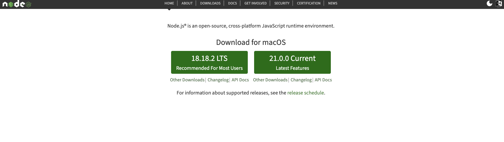
pnpm 包管理工具
Node18 版本自带有 pnpm
pnpm -v8.6.12如果没有的可以下载
npm install -g pnpm
使用 Nest Cli 创建项目
安装脚手架
pnpm i -g @nestjs/cli创建新 Nestjs 项目
nest new project-nameproject-name 项目的名称
第2集 Nestjs 初始化目录结构介绍
简介：Nestjs 初始化目录结构介绍
结构目录
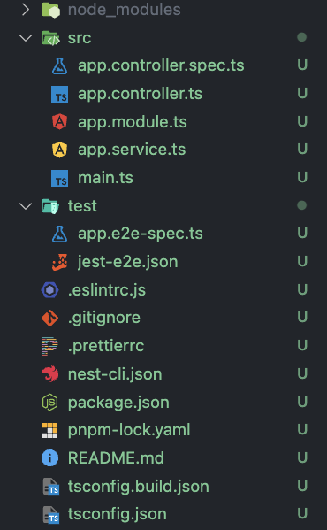
各个文件介绍
- node_modules ——放置项目的依赖文件- src ——放置开发的代码文件- app.controller.spec.ts ——测试 app.controller.ts 文件的单元测试文件- app.controller.ts ——根控制器文件，处理路由的请求和定义路由处理器- app.module.ts ——根模块文件，Nest 应用的主要入口- app.service.ts ——根服务文件，用于处理根控制器中的业务逻辑- main.ts ——应用程序的入口文件，用于初始化和启动 Nest 应用- test ——测试文件，用于编写应用程序的单元测试和集成测试- app.e2e-spec.ts ——编写和运行 E2E 测试的测试规范文件- jest-e2e.json ——Jest 的 E2E 测试配置文件- eslintrc.js ——eslint配置文件- .gitignore ——git忽略文件- prettierrc ——prettier配置文件- nest-cli.json ——Nest CLI的配置文件- package.json ——定义项目的配置和依赖管理- pnpm-lock.yaml ——锁定项目的依赖包版本- README.MD ——项目的说明文件- tsconfig.build.json ——构建生产环境的额外配置文件- tsconfig.json ——TypeScript的配置文件
第3集 Nestjs 提供 Get 和 Post 请求
简介：Nestjs 提供 Get 和 Post 请求
Get 请求
控制器
@Get('get')getHello(): string {return this.appService.getHello();}服务
getHello(): string {return 'Hello World!';}
Post 请求
控制器
xxxxxxxxxx@Post('Post')postHello(): string {return this.appService.postHello();}服务
xxxxxxxxxxpostHello(): string {return 'Hello Nest!';}
 愿景："让编程不再难学，让技术与生活更加有趣"
愿景："让编程不再难学，让技术与生活更加有趣"
更多课程请访问 xdclass.net
第三章 千里之行始于足下-详解 Nestjs 基础知识
第1集 什么是装饰器和 Nestjs 中的应用
简介：什么是装饰器和 Nestjs 中的应用
装饰器
类装饰器
xxxxxxxxxxconst doc: ClassDecorator = (target: any) => {console.log(target);target.prototype.name = "小滴课堂";};@docclass Xdclass {constructor() {}}const a: any = new Xdclass();console.log(a.name);属性装饰器
xxxxxxxxxxconst doc: PropertyDecorator = (target: any, key: string | symbol) => {console.log(target, key);};class Xdclass {@docpublic title: string;constructor() {this.title = "小滴课堂";}}方法装饰器
xxxxxxxxxxconst doc: MethodDecorator = (target: any,key: string | symbol,descriptor: any) => {console.log(target, key, descriptor);};class Xdclass {public title: string;constructor() {this.title = "小滴课堂";}@docgetTitle() {}}参数装饰器
xxxxxxxxxxconst doc: ParameterDecorator = (target: any,key: string | symbol | undefined,parameterIndex: number) => {console.log(target, key, parameterIndex);};class Xdclass {public title: string;constructor() {this.title = "小滴课堂";}getTitle(title: string, @doc length: number) {}}
第2集 详解 Nestjs 控制器
简介：详解 Nestjs 控制器
Nestjs 控制器中的装饰器
装饰器 说明 @Request() 请求参数 @Response() 响应参数 @Query Get 请求直接获取参数 @Body Post 请求直接获取参数 @Param 动态路由获取参数 @Headers 获取 header 信息 @HttpCode 控制器返回的状态码 @Next() 继续处理下一个中间件或路由
第3集 Nest Cli 常用命令提高开发效率
简介： Nest Cli 常用命令提高开发效率
查看所有快捷命令
xxxxxxxxxxnest --help生成模块
xxxxxxxxxxnest g mo demo生成控制器
xxxxxxxxxxnest g co demo生成服务
xxxxxxxxxxnest g s demo生成用户相关接口
xxxxxxxxxxnest g resource user
接口调试
第4集 Nestjs RESful 风格 API 开发
简介： Nestjs RESful 风格 API 开发
RESful
- 是一种风格，不是标准也不是协议，我们也可以直接通过 get 和 post 完成接口的开发，不一定要按照这种风格
一般的接口
http://localhost:3000/api/user/register
- 注册接口，需要在数据库增加用户信息，post 方法
http://localhost:3000/api/user/delete
- 删除接口，需要在数据库删除用户信息，post 方法
http://localhost:3000/api/user/change
- 修改接口，需要在数据库修改用户信息，post 方法
http://localhost:3000/api/user/find
- 查询接口，需要在数据库查询用户信息，get 方法
RESful 接口
http://localhost:3000/api/user
查询接口，GET方法
增加接口，POST方法
更新接口，PUT PATCH方法
删除接口， DELETE方法
版本控制
xxxxxxxxxxapp.enableVersioning({type: VersioningType.URI,});
 愿景："让编程不再难学，让技术与生活更加有趣"
愿景："让编程不再难学，让技术与生活更加有趣"
更多课程请访问 xdclass.net
第四章 牛刀小试-详解 Nestjs 进阶用法
第1集 如何理解 Nestjs 的提供者 Providers
简介：如何理解 Nestjs 的提供者 Providers
providers
- 可以将其视为一个服务容器，通过 providers 可以提供各种服务，也就是可重复使用的代码块，用于处理应用程序中的特定任务和逻辑
- 在代码中就是用 @Injectable() 装饰器注释的类
基本用法
通过 @Injectable 装饰器注释类 AppService
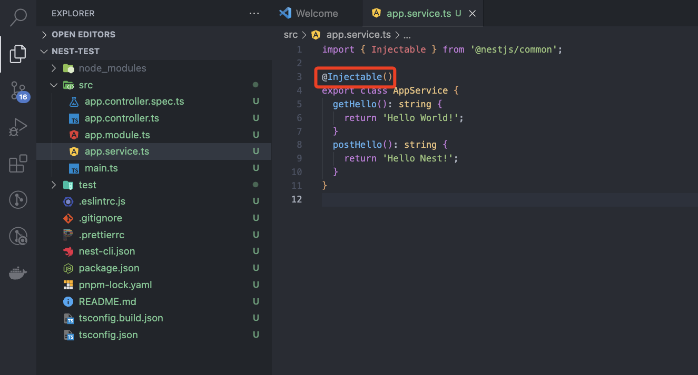
在 App.module 中引入，配置 providers
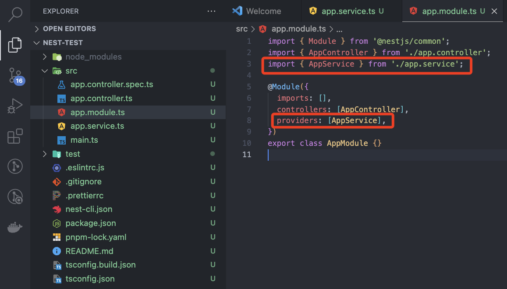
在要使用的控制器上进行注入
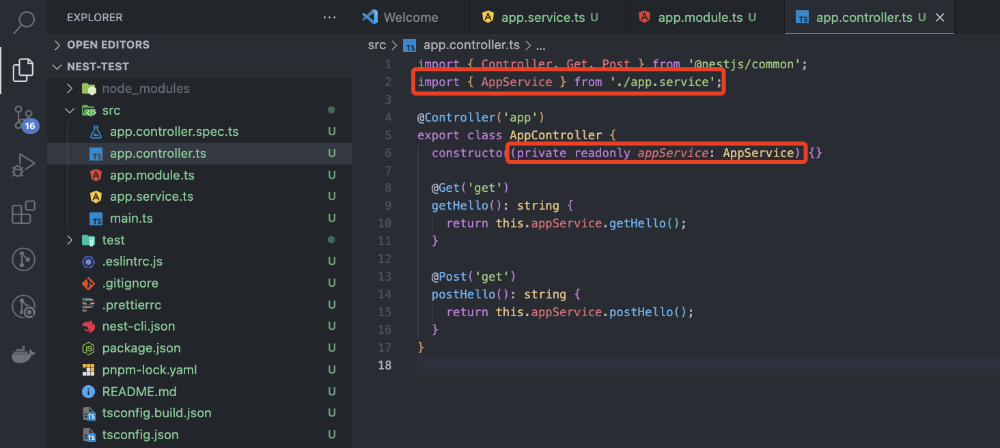
自定义名称
xxxxxxxxxximport { Module } from '@nestjs/common';import { AppController } from './app.controller';import { AppService } from './app.service';@Module({imports: [],controllers: [AppController],providers: [{provide: "xdclass",useClass: AppService}]})export class AppModule {}自定义注入值
xxxxxxxxxximport { Module } from '@nestjs/common';import { AppController } from './app.controller';import { AppService } from './app.service';@Module({imports: [],controllers: [AppController],providers: [{provide: "xdclass",useClass: AppService},{provide: "car",useClass: ['奔驰','宝马','奥迪']}]})export class AppModule {}工厂模式
xxxxxxxxxximport { Module } from '@nestjs/common';import { UserService } from './user.service';import { CourseService } from '../course/course.service';import { UserController } from './user.controller';@Module({controllers: [UserController],providers: [CourseService,{provide: 'xdclass',useClass: UserService,},{provide: 'car',useValue: ['奔驰', '宝马', '奥迪'],},{provide: 'course',inject: [CourseService],useFactory(courseService: CourseService) {console.log(courseService.findAll());return 'course 工厂执行了';},},],})export class UserModule {}
第2集 如何理解 Nestjs 的模块 Module
简介：如何理解 Nestjs 的模块 Module
模块 Module
定义
- 在 Nest 中，模块（Module）是组织和管理应用程序功能的一种方式
- 它可以看作是一个容器，用于将相关的组件、提供者和路由等聚合在一起
- 通过模块，我们可以将应用程序拆分成更小的可重用组件，并将其组织成一个整体
共享模块（需要共享的服务需要抛出）
xxxxxxxxxximport { Module, Global } from '@nestjs/common';import { CourseService } from './course.service';import { CourseController } from './course.controller';@Global()@Module({controllers: [CourseController],providers: [CourseService],exports: [CourseService],})export class CourseModule {}全局模块
xxxxxxxxxximport { Module, Global } from '@nestjs/common';import { CourseService } from './course.service';import { CourseController } from './course.controller';@Global()@Module({controllers: [CourseController],providers: [CourseService,{ provide: 'globalUrl', useValue: { baseUrl: 'https:xdclass.net' } },],exports: [CourseService,{ provide: 'globalUrl', useValue: { baseUrl: 'https:xdclass.net' } },],})export class CourseModule {}xxxxxxxxxx// 在需要使用的控制器中进行注入@Inject('globalUrl') private readonly globalUrl: any,动态模块
xxxxxxxxxximport { Module, Global, DynamicModule } from '@nestjs/common';import { CourseService } from './course.service';import { CourseController } from './course.controller';interface Options {path: string;}@Global()@Module({})export class CourseModule {static forRoot(options: Options): DynamicModule {return {module: CourseModule,controllers: [CourseController],providers: [CourseService,{provide: 'globalUrl',useValue: { baseUrl: `https:xdclass.net${options.path}` },},],exports: [CourseService,{provide: 'globalUrl',useValue: { baseUrl: `https:xdclass.net${options.path}` },},],};}}
第3集 掌握 Nestjs 中间件的使用
简介：掌握 Nestjs 中间件的使用
中间件
定义
- 请求到达处理程序之前或之后，对请求和响应进行处理，类似 express 中间件
- 中间件可以用于执行各种任务，例如身份验证、日志记录、数据转换等
自定义依赖注入中间件
xxxxxxxxxximport { Injectable, NestMiddleware } from '@nestjs/common';import { Request, Response, NextFunction } from 'express';@Injectable()export class Test implements NestMiddleware {use(req: Request, res: Response, next: NextFunction) {console.log('测试中间件执行');next();// res.send('拦截了')}}xxxxxxxxxximport { Module, NestModule, MiddlewareConsumer } from '@nestjs/common';import { UserService } from './user.service';import { UserController } from './user.controller';import { Test } from '../middleware/Test';@Module({controllers: [UserController],providers: [UserService],exports: [UserService],})export class UserModule implements NestModule {configure(consumer: MiddlewareConsumer) {consumer.apply(Test).forRoutes('user');// consumer.apply(Test).forRoutes({ path: 'user', method: RequestMethod.GET });// consumer.apply(Test).forRoutes(UserController);}}自定义全局中间件
xxxxxxxxxximport { NestFactory } from '@nestjs/core';import { AppModule } from './app.module';import { Request, Response, NextFunction } from 'express';const passPath = ['/user'];function middleWareAll(req: Request, res: Response, next: NextFunction) {console.log(req.originalUrl, '全局中间件输出的');if (passPath.includes(req.originalUrl)) {next();} else {res.send('user 接口才能请求');}}async function bootstrap() {const app = await NestFactory.create(AppModule);app.use(middleWareAll);await app.listen(3000);}bootstrap();第三方中间件 cors
xxxxxxxxxximport { NestFactory } from '@nestjs/core';import { AppModule } from './app.module';import { Request, Response, NextFunction } from 'express';import * as cors from 'cors';const passPath = ['/user'];function middleWareAll(req: Request, res: Response, next: NextFunction) {console.log(req.originalUrl, '全局中间件输出的');if (passPath.includes(req.originalUrl)) {next();} else {res.send('user 接口才能请求');}}async function bootstrap() {const app = await NestFactory.create(AppModule);app.use(cors());app.use(middleWareAll);await app.listen(3000);}bootstrap();Nest 自带跨域配置
xxxxxxxxxxapp.enableCors()
第4集 你知道 Nest 如何进行上传文件吗
简介：你知道 Nest 如何进行上传文件吗
Nest 上传文件
xxxxxxxxxxpnpm i multer @types/multerxxxxxxxxxximport { Module } from '@nestjs/common';import { UploadService } from './upload.service';import { UploadController } from './upload.controller';import { MulterModule } from '@nestjs/platform-express';import { diskStorage } from 'multer';import { join, extname } from 'path';@Module({imports: [MulterModule.register({storage: diskStorage({destination: join(__dirname, '../images'),filename: (_, file, callback) => {const fileName = `${new Date().getTime() + extname(file.originalname)}`;return callback(null, fileName);},}),}),],controllers: [UploadController],providers: [UploadService],})export class UploadModule {}xxxxxxxxxx// 控制器@Post('img')@UseInterceptors(FileInterceptor('file'))upload(@UploadedFile() file) {console.log(file);return true;}静态资源访问
xxxxxxxxxxasync function bootstrap() {const app = await NestFactory.create<NestExpressApplication>(AppModule);app.useStaticAssets(join(__dirname, 'images'), {prefix: '/xd',});app.use(cors());app.use(middleWareAll);await app.listen(3000);}bootstrap();
 愿景："让编程不再难学，让技术与生活更加有趣"
愿景："让编程不再难学，让技术与生活更加有趣"
更多课程请访问 xdclass.net
第五章 崭露头角-Nest 处理异步和拦截器
第1集 掌握 Rxjs 和在 Nest 中的应用
简介：掌握 Rxjs 和在 Nest 中的应用
定义
- RxJS 是一种功能强大的响应式编程库，使用的是观察者模式，简洁而直观的方式处理异步操作和事件流
- 在 Nest 框架中自带的，无需安装
Rxjs 核心功能
Observable 发布可观察的任务
subscribe 订阅任务
案例
xxxxxxxxxximport { Injectable } from '@nestjs/common';import { Observable } from 'rxjs';@Injectable()export class AppService {getHello(): string {const observable = new Observable((subscriber) => {subscriber.next(1);subscriber.next(2);subscriber.next(3);setTimeout(() => {subscriber.next(4);subscriber.complete();}, 1000);});observable.subscribe({next: (value) => {console.log(value);},});return 'Hello World!';}postHello(): string {return 'Hello Nest!';}}
interval 操作符：不停生成值的操作符
take 操作符：限制生成值的数量
of 操作符：自定义数据
案例
xxxxxxxxxxpostHello(): string {interval(1000).pipe(take(6)).subscribe((e) => {console.log(e);});return 'Hello Nest!';}xxxxxxxxxxpostHello(): string {const subs = interval(1000).pipe(map((v) => ({ num: v })),filter((v) => v.num % 2 == 0),).subscribe((e) => {console.log(e);if (e.num == 10) {subs.unsubscribe();}});return 'Hello Nest!';}xxxxxxxxxxpostHello(): string {const subs = of(1,2,3,4,5).pipe(map((v) => ({ num: v })),filter((v) => v.num % 2 == 0),).subscribe((e) => {console.log(e);if (e.num == 10) {subs.unsubscribe();}});return 'Hello Nest!';}
第2集 Nest 的响应拦截器
简介：Nest 的响应拦截器
响应拦截器
- 用于全局处理 HTTP 响应的中间件，提供了一种统一的方式来处理和修改从后端返回给前端的数据
- 例如对响应数据进行格式化、加密或日志记录
代码演示
xxxxxxxxxx{message: '请求成功了'data: {token:'xxxxx'},code: 0,}xxxxxxxxxximport type { CallHandler, NestInterceptor } from '@nestjs/common';import { Injectable } from '@nestjs/common';import type { Observable } from 'rxjs';import { map } from 'rxjs';/*** 拦截器 成功返回的统一响应格式*/@Injectable()export class Response implements NestInterceptor {intercept(context, next: CallHandler): Observable<any> {return next.handle().pipe(map((data) => {return {data,code: 0,};}),);}}
第3集 Nest 的异常拦截器
简介：Nest 的异常拦截器
异常拦截器
用于全局处理 HTTP 异常的中间件，提供了一种统一的方式来处理和修改从后端返回给前端的错误
例如统一错误格式、向客户端发送适当的错误响应
代码演示
xxxxxxxxxx{code: -1,data: null,msg: message,}xxxxxxxxxximport type { ArgumentsHost, ExceptionFilter } from '@nestjs/common'import { Catch, HttpException } from '@nestjs/common'/*** 异常过滤器 异常返回统一响应* 捕获作为HttpException类实例的异常，并为它们设置自定义响应逻辑*/@Catch(HttpException)export class AbnormalFilter implements ExceptionFilter {catch(exception: HttpException, host: ArgumentsHost) {// 获取请求上下文const ctx = host.switchToHttp()// 获取请求上下文中的 response对象const response = ctx.getResponse()// 获取异常状态码const status = exception.getStatus()// 异常消息const message = exception.message ? exception.message : 'Service Error'// Response.json()方法，使用 Response对象直接控制发送的响应。response.status(status).json({code: -1,data: null,msg: message,})}}
第4集 Nest 的管道 Pipe 转换
简介：Nest 的管道 Pipe 转换
Pipe的类型转换
- ParseIntPipe 数据类型
- ParseFloatPipe 浮点类型
- ParseBoolPipe boolean 类型
- ParseArrayPipe 数组
- ParseUUIDPipe uuid
- ParseEnumPipe 枚举
- DefaultValuePipe 默认值
代码演示
ParseIntPipe
xxxxxxxxxx@Get(':id')findOne(@Param('id', ParseIntPipe) id: number) {console.log(typeof id);return this.userService.findOne(+id);}ParseBoolPipe
xxxxxxxxxx@Get(':id')findOne(@Param('id', ParseBoolPipe) id: boolean) {console.log(typeof id);return this.userService.findOne(+id);}
第5集 Nest 的管道验证 DTO
简介：管道验证 DTO
创建 DTO 文件
xxxxxxxxxx// create-user.dto.tsimport { IsString, IsEmail, Length } from 'class-validator';export class CreateUserDto {@IsString()@Length(3, 20)name: string;@IsEmail()email: string;@IsString()@Length(6, 20)password: string;}xxxxxxxxxx// main.tsapp.useGlobalPipes(new ValidationPipe());xxxxxxxxxx// user.controller.ts@Post()create(@Body() createUserDto: CreateUserDto) {return this.userService.create(createUserDto);}
 愿景："让编程不再难学，让技术与生活更加有趣"
愿景："让编程不再难学，让技术与生活更加有趣"
更多课程请访问 xdclass.net
第六章 磨刀擦枪-Nest ORM 框架和数据库
第1集 安装 Mysql 数据库和可视化工具安装使用
简介：安装 Mysql 数据库和可视化工具安装使用
本地安装 docker
Mysql 安装
xxxxxxxxxxdocker run \-p 3306:3306 \-e MYSQL_ROOT_PASSWORD=xdclass.net168 \--name xdclass_nest \--restart=always \-d mysql:8.0可视化工具安装使用
- navicate
第2集 Nest 通过 TypeORM 链接 Mysql 数据库
简介：Nest 通过 TypeORM 链接Mysql 数据库
TypeORM 安装
xxxxxxxxxxpnpm i typeorm @nestjs/typeorm mysql2链接数据库
xxxxxxxxxx// config.tsimport type { TypeOrmModuleOptions } from '@nestjs/typeorm'export const typeOrmConfig: TypeOrmModuleOptions = {type: 'mysql',host: '127.0.0.1',port: 3306,username: 'root',password: 'xdclass.net168',database: 'xdclass-nest', // 创建的数据库名字为准，而不是容器名entities: ['dist/**/*.entity{.ts,.js}'],autoLoadEntities: true,synchronize: true,}xxxxxxxxxx// app.module.tsimports: [TypeOrmModule.forRoot(typeOrmConfig),]
第3集 TypeORM 配置实体和操作数据库
简介：TypeORM 配置实体和操作数据库
实体 entity
xxxxxxxxxximport { Column, Entity, PrimaryGeneratedColumn } from 'typeorm';@Entity()export class User {@PrimaryGeneratedColumn()id: number = 0;@Column()name: string = '';@Column()phone: string = '';@Column()password: string = '';}配置
xxxxxxxxxx// user.module.tsimport { TypeOrmModule } from '@nestjs/typeorm';import { User } from './entities/user.entity';imports: [TypeOrmModule.forFeature([User])]xxxxxxxxxx// user.controller.tsimport { InjectRepository } from '@nestjs/typeorm';import { Repository } from 'typeorm';import { User } from './entities/user.entity';@InjectRepository(User) private readonly userRepository: Repository<User>,操作数据库
TypeORM 官网
- 增 save
- 删 delete
- 改 update
- 查 findOne find
 愿景："让编程不再难学，让技术与生活更加有趣"
愿景："让编程不再难学，让技术与生活更加有趣"
更多课程请访问 xdclass.net
第七章 沙场秋点兵-项目需求分析和项目初始化
第1集 项目需求分析—接口和数据库数据结构分析
简介：项目需求分析
登录
注册
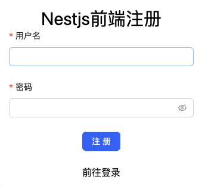
课程管理页面
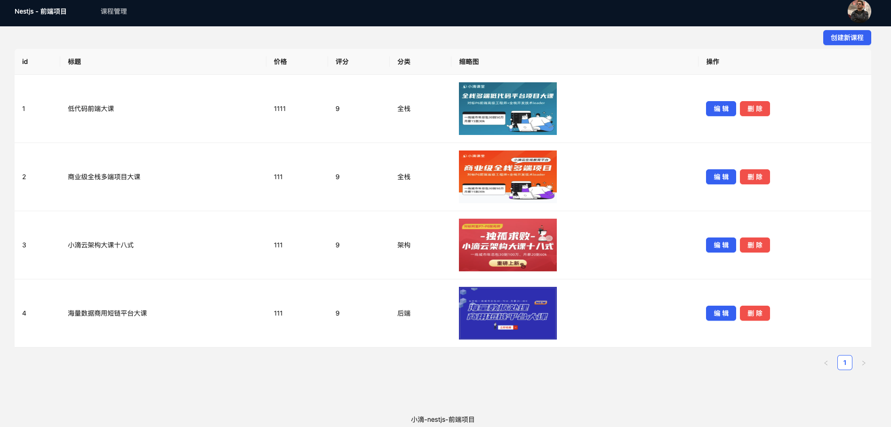
后端接口
用户相关
- 用户登录接口
- 用户注册接口
- 用户查询接口
课程相关
- 课程查询接口
- 课程修改接口
- 课程删除接口
- 课程增加接口
数据库数据结构
用户数据表（user）
xxxxxxxxxxusername 用户名password 密码head_img 头像课程数据表（course）
xxxxxxxxxxtitle 标题courseImg 图片price 价格point 评分category 分类del 是否删除
第2集 项目初始化—创建项目和接口
简介：项目初始化
创建项目
xxxxxxxxxxnest new nest-project初始化接口
用户接口
- 用户登录接口
- 用户注册接口
- 用户查询接口
课程接口
- 课程增加接口
- 课程删除接口
- 课程修改接口
- 课程查询接口
配置跨域
xxxxxxxxxxapp.enableCors();
第3集 项目初始化—安装配置 TypeORM 和 Mysql
简介：项目初始化
安装配置 TypeORM 链接 mysql
安装
xxxxxxxxxxpnpm i typeorm mysql2 @nestjs/typeormmysql 配置
xxxxxxxxxximport type { TypeOrmModuleOptions } from '@nestjs/typeorm';export const typeOrmConfig: TypeOrmModuleOptions = {type: 'mysql',host: '127.0.0.1',port: 3306,username: 'root',password: 'xdclass.net168',database: 'xdclass-nest',entities: ['dist/**/*.entity{.ts,.js}'],autoLoadEntities: true,synchronize: true,};主模块引入
用户表和课程表实体文件定义
用户表
xxxxxxxxxximport { Column, Entity, PrimaryGeneratedColumn } from 'typeorm';@Entity()export class User {@PrimaryGeneratedColumn()id: number = 0;@Column()username: string = '';@Column()password: string = '';@Column()head_img: string = '';}课程表
xxxxxxxxxximport { Column, Entity, PrimaryGeneratedColumn } from 'typeorm';@Entity()export class Course {@PrimaryGeneratedColumn()id: number = 0;@Column()title: string = '';@Column()course_img: string = '';@Column()price: string = '';@Column()point: string = '';@Column()category: string = '';@Column()del: string = '';}
第4集 项目初始化—接口响应和异常拦截器
简介：项目初始化
响应拦截器
xxxxxxxxxximport type {ExecutionContext,NestInterceptor,CallHandler,} from '@nestjs/common';import type { Observable } from 'rxjs';import { map } from 'rxjs';import { Injectable } from '@nestjs/common';/*** 拦截器 成功返回的统一响应格式*/@Injectable()export class ResponseIntercept implements NestInterceptor {// 调用 next 处理器，执行里面 handel()，使用 pipe 操作符进行管道处理，map 操作符映射数据intercept(context: ExecutionContext, next: CallHandler): Observable<any> {return next.handle().pipe(map((data) => {return {code: 0,data,};}),);}}异常拦截器
xxxxxxxxxximport type { ArgumentsHost, ExceptionFilter } from '@nestjs/common';import { Catch, HttpException } from '@nestjs/common';@Catch(HttpException)export class AbnormalFilter implements ExceptionFilter {catch(exception: HttpException, host: ArgumentsHost) {// 获取请求的上下文const ctx = host.switchToHttp();// 获取上下文的 response 对象const response = ctx.getResponse();// 获取异常的状态码const status = exception.getStatus();// 异常的消息const message = exception.message ? exception.message : 'service error';response.status(status).json({code: -1,data: null,msg: message,});}}
注册拦截器
xxxxxxxxxximport { ResponseIntercept } from './common/responseIntercept';import { AbnormalFilter } from './common/abnormalFilter';app.useGlobalInterceptors(new ResponseIntercept());app.useGlobalFilters(new AbnormalFilter());
第5集 项目初始化—接口参数 DTO 验证
简介：项目初始化
注册接口
xxxxxxxxxximport { IsString, IsNotEmpty } from 'class-validator';export class RegisterUserDto {@IsNotEmpty({ message: 'username限制不为空!' })@IsString({ message: 'username限制为字符串类型!' })username: string;@IsNotEmpty({ message: 'password限制不为空!' })@IsString({ message: 'password限制为字符串类型!' })password: string;}xxxxxxxxxx// main.tsimport { ValidationPipe } from '@nestjs/common';app.useGlobalPipes(new ValidationPipe());课程创建接口
xxxxxxxxxximport { IsNotEmpty, IsString } from 'class-validator';export class CreateCourseDto {@IsNotEmpty({ message: 'title限制不可为空' })@IsString({ message: 'title限制必须为字符串' })title: string;@IsNotEmpty({ message: 'course_img限制不可为空' })@IsString({ message: 'course_img限制必须为字符串' })course_img: string;@IsNotEmpty({ message: 'price限制不可为空' })@IsString({ message: 'price限制必须为字符串' })price: string;@IsNotEmpty({ message: 'point限制不可为空' })@IsString({ message: 'point限制必须为字符串' })point: string;@IsNotEmpty({ message: 'category限制不可为空' })@IsString({ message: 'category限制必须为字符串' })category: string;}课程修改接口
xxxxxxxxxximport { IsString, IsNotEmpty, IsNumber } from 'class-validator';export class UpdateCourseDto {@IsNotEmpty({ message: 'id限制不可为空' })@IsNumber({allowNaN: false,allowInfinity: false,},{ message: 'id限制必须为数字' },)id: number;@IsString({ message: 'title限制必须为字符串' })title?: string;@IsString({ message: 'course_img限制必须为字符串' })course_img?: string;@IsString({ message: 'price限制必须为字符串' })price?: string;@IsString({ message: 'point限制必须为字符串' })point?: string;@IsString({ message: 'category限制必须为字符串' })category?: string;}课程删除接口
xxxxxxxxxximport { IsNotEmpty, IsNumber } from 'class-validator';export class DeleteCourseDto {@IsNotEmpty({ message: 'id限制不可为空' })@IsNumber({allowNaN: false,allowInfinity: false,},{ message: 'id限制必须为数字' },)id: number;}
 愿景："让编程不再难学，让技术与生活更加有趣"
愿景："让编程不再难学，让技术与生活更加有趣"
更多课程请访问 xdclass.net
第八章 烽火四起-用户接口开发
第1集 后端接口开发—用户的注册接口开发
简介：用户的注册接口开发
注册接口逻辑
xxxxxxxxxxhttp://localhost:3000/user/register加密配置
xxxxxxxxxx// utils/InternalTools.tsimport { Injectable } from '@nestjs/common';import { createHash } from 'crypto';@Injectable()export class InternalTools {getSecret(data: string) {return createHash('md5').update(data).digest('hex');}}JWT 生成 token
xxxxxxxxxx// config.tsexport const jwtConfig: JwtModuleOptions = {secret: 'xdclass.net',signOptions: { expiresIn: '7d' },global: true,};注入加密、 JWT 和 TypeORM 依赖
xxxxxxxxxximport { Module } from '@nestjs/common';import { UserService } from './user.service';import { UserController } from './user.controller';import { TypeOrmModule } from '@nestjs/typeorm';import { User } from './entities/user.entity';import { InternalTools } from '../utils/InternalTools';import { JwtModule } from '@nestjs/jwt';import { jwtConfig } from '../config';@Module({imports: [TypeOrmModule.forFeature([User]), JwtModule.register(jwtConfig)],controllers: [UserController],providers: [UserService, InternalTools],})export class UserModule {}
注册逻辑
xxxxxxxxxx// user.service.tsimport { Injectable, BadRequestException } from '@nestjs/common';import { RegisterUserDto } from './dto/create-user.dto';import { InjectRepository } from '@nestjs/typeorm';import { User } from './entities/user.entity';import { Repository } from 'typeorm';import { InternalTools } from 'src/utils/InternalTools';import { JwtService } from '@nestjs/jwt';@Injectable()export class UserService {constructor(private readonly jwtService: JwtService,private readonly internalTool: InternalTools,@InjectRepository(User) private readonly userRepository: Repository<User>,) {}async register({ username, password }: RegisterUserDto) {// 查找用户是否注册过const foundUser = await this.userRepository.findOneBy({username: username,});if (foundUser) {throw new BadRequestException('用户已存在！');}// 插入一条新用户数据const user = await this.userRepository.save({username,password: this.internalTool.getSecret(password),head_img: 'https://sdfsdf.dev/35x35.png',});return {msg: '注册成功！',data: this.jwtService.sign({ id: user.id }),};}}
第2集 后端接口开发—用户的登录接口开发
简介：用户的登录接口开发
登录接口逻辑
xxxxxxxxxxhttp://localhost:3000/user/loginxxxxxxxxxxasync login({ username, password }) {const user = await this.userRepository.findOneBy({ username });if (!user) {throw new BadRequestException('账号或密码错误');}const isPasswordValid =user.password === this.internalTool.getSecret(password);if (!isPasswordValid) {throw new BadRequestException('账号或密码错误');}return { data: this.jwtService.sign({ id: user.id }), msg: '登录成功！' };}
第3集 后端接口开发—用户的查询接口开发
简介：用户的查询接口开发
查询接口逻辑
xxxxxxxxxxhttp://localhost:3000/user/findtoken 解密
xxxxxxxxxx@Injectable()export class JwtDecrypTool {constructor(private readonly jwtService: JwtService) {}getDecryp(token: string) {let decodedToken: any;try {decodedToken = this.jwtService.verify(token);} catch (error) {throw new BadRequestException('token 有误!');}console.log(decodedToken);if (!decodedToken) throw new BadRequestException('请先登录!');if (decodedToken.exp - decodedToken.iat <= 0)throw new BadRequestException('登录已过期，请重新登陆!');return decodedToken.id;}}
 愿景："让编程不再难学，让技术与生活更加有趣"
愿景："让编程不再难学，让技术与生活更加有趣"
更多课程请访问 xdclass.net
第九章 烽火四起-课程接口开发
第1集 后端接口开发—课程的查询接口开发
简介：课程的查询接口开发
- 接口使用 RESful API
查询接口逻辑
xxxxxxxxxxhttp://localhost:3000/coursexxxxxxxxxx// user.module.tsimport { Module } from '@nestjs/common';import { CourseService } from './course.service';import { CourseController } from './course.controller';import { TypeOrmModule } from '@nestjs/typeorm';import { Course } from './entities/course.entity';import { JwtModule } from '@nestjs/jwt';import { jwtConfig } from '../config';import { JwtDecrypTool } from '../utils/InternalTools';@Module({imports: [JwtModule.register(jwtConfig), TypeOrmModule.forFeature([Course])],controllers: [CourseController],providers: [CourseService, JwtDecrypTool],})export class CourseModule {}xxxxxxxxxx// course.controller.ts@Get()findAll(@Headers() header) {this.jwtDecrypTool.getDecryp(header.authorization);return this.courseService.findAll();}xxxxxxxxxx// course.service.tsfindAll() {return this.courseRepository.findBy({ del: '0' });}
第2集 后端接口开发—课程的创建接口开发
简介：课程的创建接口开发
创建接口逻辑
xxxxxxxxxx// course.controller.ts@Post()create(@Body() dto: CreateCourseDto, @Headers() header) {this.jwtDecrypTool.getDecryp(header.authorization);return this.courseService.create(dto);}xxxxxxxxxx// course.service.tsasync create(dto: CreateCourseDto) {await this.courseRepository.save({dto,del: '0',});}
第3集 后端接口开发—课程的修改接口开发
简介：课程的修改接口开发
修改接口逻辑
xxxxxxxxxx// course.controller.ts@Put()async update(@Headers() header, @Body() dto: UpdateCourseDto) {this.jwtDecrypTool.getDecryp(header.authorization);return this.courseService.update(dto);}xxxxxxxxxx// course.service.tsasync update(dto: UpdateCourseDto) {await this.courseRepository.update(dto.id, dto);}
第4集 后端接口开发—课程的删除接口开发
简介：课程的删除接口开发
删除接口逻辑
xxxxxxxxxx// course.controller.ts@Delete()async delete(@Body() dto: DeleteCourseDto) {return this.courseService.delete(dto);}xxxxxxxxxx// course.service.tsasync delete(dto: DeleteCourseDto) {await this.courseRepository.update(dto.id, {del: '1',});}
 愿景："让编程不再难学，让技术与生活更加有趣"
愿景："让编程不再难学，让技术与生活更加有趣"
更多课程请访问 xdclass.net
第十章 烽火四起-前端页面开发和接口联调
第1集 项目需求分析—前端页面需求分析
简介：项目需求分析
登录
注册
课程管理页面
路由管理页面
登录 login
注册 register
课程管理 courseManage
- 表格组件
- 创建或编辑组件
样式
- Tailwind CSS
第2集 项目初始化—创建 React 项目和初始配置
简介：创建 React 项目和初始配置
创建React 项目
xxxxxxxxxxpnpm create vite设置项目名称 react-project选择 typescript整理项目代码
配置路由
xxxxxxxxxxpnpm i react-router-dom配置 Tailwind CSS
xxxxxxxxxxpnpm install tailwindcss postcss autoprefixer配置文件
xxxxxxxxxx// tailwind.config.js/** @type {import('tailwindcss').Config} */export default {content: ["./index.html","./src/**/*.{js,ts,jsx,tsx}",],theme: {extend: {},},plugins: [],}xxxxxxxxxx// postcss.config.jsexport default {plugins: {tailwindcss: {},autoprefixer: {},},};
第3集 页面和数据联调—登录模块开发
简介：登录模块开发
逻辑代码
xxxxxxxxxximport { useLocalStorageState, useRequest } from "ahooks";import { Form, Input, Button } from "antd";import { NavLink, useNavigate } from "react-router-dom";import { login } from "../api/user";interface FieldType {username: string;password: string;}export default function LoginPage() {const nav = useNavigate();const [, setToken] = useLocalStorageState<string>("token", {defaultValue: "",});// 登录接口请求const { run, loading } = useRequest((data: FieldType) => login(data), {manual: true,onSuccess: ({ data }) => {// 设置缓存setToken(data);// 跳转课程管理页面nav("/control");},});return (<div className="w-full h-full flex items-center justify-center bg-[#f1f2f4]"><div className="w-[350px] h-[320px] shadow-md p-5 bg-white rounded-xl"><h1 className="text-center text-3xl">Nestjs前端登录</h1><div className="h-full"><Form autoComplete="off" layout="vertical" onFinish={run}><Form.Item<FieldType>label="用户名"name="username"rules={[{ required: true, message: "请输入你的用户名" }]}><Input /></Form.Item><Form.Item<FieldType>label="密码"name="password"rules={[{ required: true, message: "请输入你的密码" }]}><Input.Password /></Form.Item><Form.Item className="text-center"><Button type="primary" htmlType="submit" loading={loading}>登录</Button></Form.Item></Form><div className="w-full text-center"><NavLink to="/register">前往注册</NavLink></div></div></div></div>);}
第4集 页面和数据联调—注册模块开发
简介：注册模块开发
代码逻辑
xxxxxxxxxximport { Form, Input, Button } from "antd";import { NavLink, useNavigate } from "react-router-dom";import { useLocalStorageState, useRequest } from "ahooks";import { register } from "../api/user";interface FieldType {username: string;password: string;}export default function RegisterPage() {const nav = useNavigate();const [, setToken] = useLocalStorageState<string>("token", {defaultValue: "",});// 注册接口请求const { run, loading } = useRequest((data: FieldType) => register(data), {manual: true,onSuccess: ({ data }) => {setToken(data);nav("/control");},});return (<div className="w-full h-full flex items-center justify-center bg-[#f1f2f4]"><div className="w-[350px] h-[320px] shadow-md p-5 bg-white rounded-xl"><h1 className="text-center text-3xl">Nestjs前端注册</h1><div className="h-full"><Form autoComplete="off" layout="vertical" onFinish={run}><Form.Item<FieldType>label="用户名"name="username"rules={[{ required: true, message: "请输入你的用户名" }]}><Input /></Form.Item><Form.Item<FieldType>label="密码"name="password"rules={[{ required: true, message: "请输入你的密码" }]}><Input.Password /></Form.Item><Form.Item className="text-center"><Button type="primary" htmlType="submit" loading={loading}>注册</Button></Form.Item></Form><div className="w-full text-center"><NavLink to="/login">前往登录</NavLink></div></div></div></div>);}
第5集 页面和数据联调—课程获取和删除模块开发
简介：课程获取和删除模块开发
逻辑代码
xxxxxxxxxximport { Button, Popconfirm, Space, Table } from "antd";import { ColumnsType } from "antd/es/table";import { ICourse, delCourse } from "../../api/course";import { useRequest } from "ahooks";import { useState } from "react";export default function CurseTable(props: {data: ICourse[];loading: boolean;reloadData: () => void;}) {const [curLoading, setCurloading] = useState(0);// 课程删除接口const { run, loading } = useRequest((id) => delCourse(id), {manual: true,onSuccess: () => {// 重新请求课程获取接口，更新课程列表props.reloadData();},});// 删除按钮function handleRemove(index: number, id: number) {setCurloading(index);run(id);}// 表格表头数组内容const columns: ColumnsType<ICourse> = [{key: "id",dataIndex: "id",title: "id",},{key: "title",dataIndex: "title",title: "标题",},{key: "price",dataIndex: "price",title: "价格",},{key: "point",dataIndex: "point",title: "评分",},{key: "category",dataIndex: "category",title: "分类",},{key: "course_img",dataIndex: "course_img",title: "缩略图",render: (value: string) => {return <img src={value} className="w-52 h-28" />;},},{key: "action",dataIndex: "action",title: "操作",render: (_, record, index) => {return (<Space><Button type="primary">编辑</Button><Popconfirmtitle="确认删除吗？这个操作不可逆！"onConfirm={() => handleRemove(index, record.id)}><Buttondangertype="primary"loading={index === curLoading && loading}>删除</Button></Popconfirm></Space>);},},];return (<Tablecolumns={columns}dataSource={props.data ?? []}loading={props.loading}pagination={{pageSize: 4,}}/>);}
第6集 页面和数据联调—课程创建和编辑模块开发
简介：课程创建和编辑模块开发
逻辑代码
xxxxxxxxxx/* eslint-disable react-hooks/rules-of-hooks */import { Form, Input, Modal, message } from 'antd'import FormItem from 'antd/es/form/FormItem'import { CourseWithoutId, ICourse, createCourse, updateCourse } from '../../api/course'import { useEffect } from 'react'import { useForm } from 'antd/es/form/Form'import { useRequest } from 'ahooks'export default function ditorOrCreateCourse(props: {isOpen: booleanreloadData: () => voidcloseModal: () => voiddefaultValues?: ICourse}) {const [form] = useForm()useEffect(() => {if (!props.isOpen) returnif (!props.defaultValues) {form.resetFields()} else {form.setFieldsValue(props.defaultValues)}// eslint-disable-next-line react-hooks/exhaustive-deps}, [props.isOpen, props.defaultValues])const { run: execCreateCourse } = useRequest((value) => createCourse(value), {manual: true,onSuccess: () => {props.reloadData()},onFinally: () => {props.closeModal()}})const { run: execUpdateCourse } = useRequest((value) => updateCourse(value), {manual: true,onSuccess: () => {props.reloadData()},onFinally: () => {props.closeModal()}})function handleOk() {if (props.defaultValues) {execUpdateCourse({form.getFieldsValue(),id: props.defaultValues.id})} else {for (const item of Object.entries(form.getFieldsValue())) {if (!item[1]) {message.warning('请填写完整表单')return}}execCreateCourse(form.getFieldsValue())}}return (<Modal open={props.isOpen} onCancel={props.closeModal} onOk={handleOk}><div className="p-10"><Form layout="vertical" form={form}><FormItem<CourseWithoutId> label="标题" name="title"><Input /></FormItem><FormItem<CourseWithoutId> label="价格" name="price"><Input /></FormItem><FormItem<CourseWithoutId> label="评分" name="point"><Input /></FormItem><FormItem<CourseWithoutId> label="分类" name="category"><Input /></FormItem><FormItem<CourseWithoutId> label="缩略图" name="course_img"><Input /></FormItem></Form></div></Modal>)}